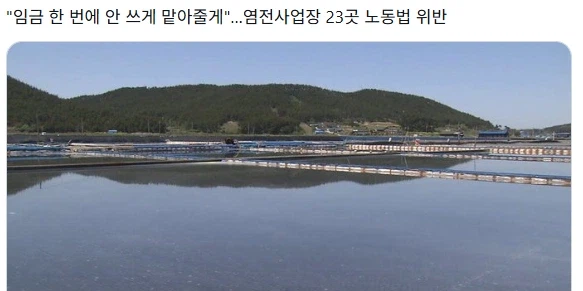

https://bbs.ruliweb.com/best/board/300143/read/77514496

전국 765개 염전 중 고용노동법 위반이 의심되는 40곳에 특별조사를 한 결과
23곳에서 노동법 위반사례가 발견.
그 중 5곳에서는 총 5천만원이 넘는 임금체불이 적발
4개 사업장에서는 시정조치 명령 후 급여를 지급했으나
"근로자들이 돈을 다 쓴다고 맡아달라고 한 것"
이라며 지급을 거부한 한곳은 형사입건조치
https://bbs.ruliweb.com/best/board/300143/read/77514496

전국 765개 염전 중 고용노동법 위반이 의심되는 40곳에 특별조사를 한 결과
23곳에서 노동법 위반사례가 발견.
그 중 5곳에서는 총 5천만원이 넘는 임금체불이 적발
4개 사업장에서는 시정조치 명령 후 급여를 지급했으나
"근로자들이 돈을 다 쓴다고 맡아달라고 한 것"
이라며 지급을 거부한 한곳은 형사입건조치
그냥 다 죽였음좋겠다 진자
신안은 지역혐오 하는게 맞다고 봄
불시에 모든 염전 전수조사 하면 400곳 정도는 무조건 나올건데 ㅋㅋ
저쪽 동네 염전주 토착 ㅈ되긴함
시발 아직도 저지랄을 한다고??? 개새끼들이네
화내는 친구들 진정해 ㅋㅋ 저지역은 판사가 공식적으로 말한곳임
"관행" 이라고
절대 안바뀜 ㅋㅋㅋㅋ
아! 마치 선관위가 선거때마다 휴직한거랑 가족 끌어줘서 취업시키는거 처럼 말이구나!
어디 경기도 공장에서 저랬어봐라 신문 대서특필되고 업주 구속임
가족없는 장애인들이라 아무도 신경 인씀
인권 단체나 장애인 단체는 저기 안가고 뭐하나 몰라
출근시간에 지하철 버스 막고계시느라 바빠서 못감 ㅜ
그분들도 자본주의라고!!
지들 주머니에 돈 안꽂히면 안가!
돈이 안되자나 ㅋㅋㅋㅋㅋ
신안은 전라도 사람들도 무서워하더라
아무 문제 없더라~ 나오는게 가장 끔찍한 미래 아닐까
잘하자?
예
그냥 ㅅㅂ 불시에 경찰특공대랑 드론 쫙뿌려서 진압해야됨
이래놓고 우리염전은 아니라고ㅋㅋㅋ
씨발련들ㅋㅋ
그냥 싹 다 폐쇄시켜 굶어죽이고 깨끗한 정제염으로 가야한다
여수,광주 오래사신 분들도 섬놈들이라 욕하심... 저기 뭔가잇음
가족이 실종되었다 하면은 무조건 신안부터 뒤져야됨
전라도는 성역인가..
??? : 오죽하면 저럴까 뇌가 있으면 생각들을 좀 해봐라.
일하던 사람들 없애버리고 어디갔는지 모른다고 할 곳들이라서 기습감찰/물리력행사/압수수색 및 민형사 고소로 한번에 다 조져야해. 그리고 지역 군수 비롯해서 공무원들에게 어떠한 정보도 주지말고 중앙에서 처리해야함.
우덜식 관습임
지금 세상에 저러는 애들은 걍 박멸 시켜야지 불법계곡보다 저런게 더 심한 문제인데 제대로 못 잡나ㅋㅋㅋ